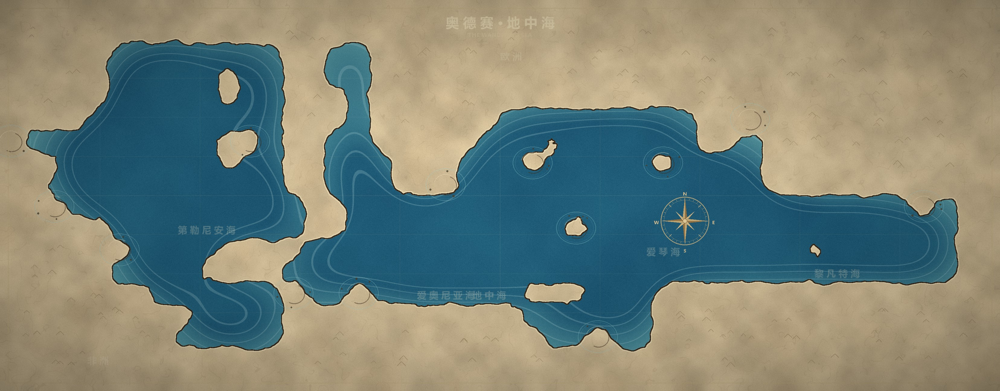

请横屏
海图横着看更清楚。转一下设备，或继续竖屏。
仍要竖屏
❤
🍖
💧
80
航海日记
🗺
📋
🎒
风袋
📸
⚙
设 置
🔊 音效
音量
节奏·标准
画质
导出存档
导入存档
重新开始
海图 M · 任务 Q · 背包 B · 互动 E · 捕鱼 F · 3D/2D G
航 海 日 记
🪙 钱袋
0
德拉克马
Lv.
1
🍖
80
💧
80
饱食与饮水归进日记，主界面只留伤势、补给、航向。数字不会消失——只是不再一起喊你。
背包
总音量
100%
音效
100%
环境音
100%
偏好自动保存 · 🔇 按钮为静音开关
任务日志
航程
船员
图鉴
档案

海 图 · 地 中 海
已解锁
待开放
你的船
洋流
抉择回声
海面事件
滚轮缩放 · 拖动海图
M / Esc 关闭
＋
－
⟲
⏱
航 路
沿岸 · 稳
外海 · 衡
迷雾 · 险
利害
信物
ΑΙΓΑΙΟΝ · ΠΕΛΑΓΟΣ
塞 壬 之 歌 · 歌 词 残 页
抄下这一页（导出 txt）
收好残页
女巫喀耳刻
意图：Xing4.0-29B-Intent · 台词：TeleChat3
记忆
✕
发送
WASD / 方向键 移动 · E 互动 · F 捕鱼/打捞 · B 背包 · Q 任务 · M 海图 · P 俯瞰 · G 3D/2D · Esc 关闭对话
海图
背包
E
点击任意处跳过
奥 德 赛 · 终 章
航 程 的 回 声
继续漂流
从头开始
终 章 · 相 认
「你是谁？」
认下它
所有路都会走到这一问——答案没有对错，只有是不是你的。
Α · ΟΔΥΣΣΕΙΑ · ΝΟΣΤΟΣ
特洛伊陷落之后 · 第十年
荷马史诗 · 一场归乡
奥德赛
地中海
十二艘船从特洛伊出发。回来的，可能只有一艘。
启航
从头开始
✦ 炉边 · 她记得多少
WASD / 方向键 移动 · E 互动 · F 捕鱼/打捞 · B 背包 · Q 任务 · M 海图 · P 俯瞰全岛 · G 3D/2D 切换 · Esc 关闭对话
炉 边 夜 话
—— 记忆 · 状态感知 · 好感分档 · 主动性 ——
✕ 关闭
▶ 再演一遍